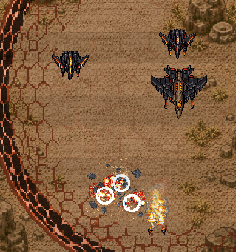
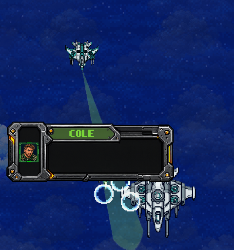
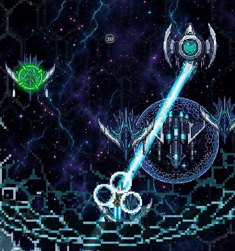

Bullets of Fury - Biome fleet
Stage 2: molten armor and furnace weapons. Stage 6: white, gray and teal wind craft. Stage 9: water-tech spacecraft in the existing void arena.
Native game captures
These captures use the game's own renderer and encounter controllers. Health, collision, warnings, sound routes and destruction remain with their native owners.
Show native verification captures



Play the game